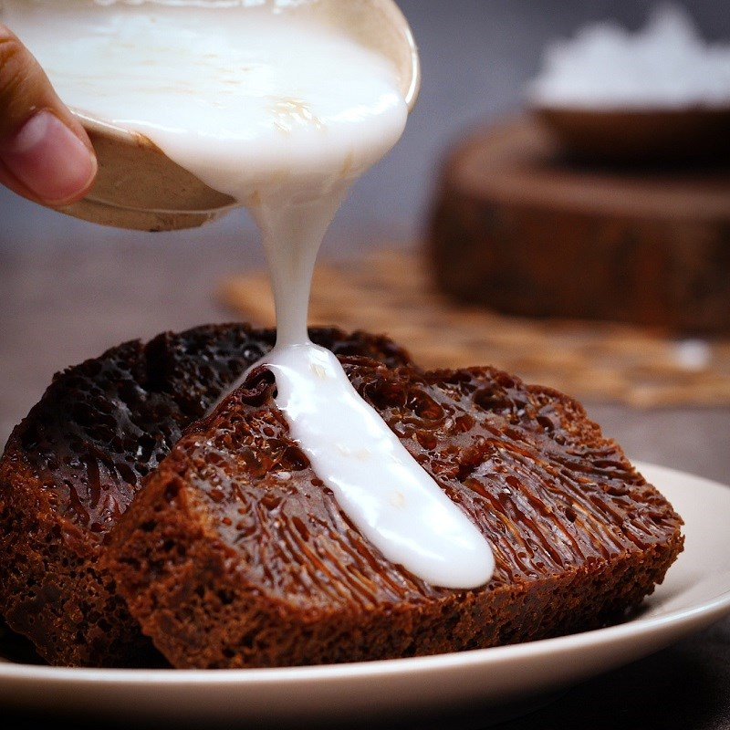

Home
Banh Bo Thot Not

Description
Banh bo thot not is a traditional Vietnamese dessert made from rice flour and palm sugar, known for its light, spongy, honeycomb-like texture and natural caramel aroma.
Ingredients
- Rice flour
- Salt
- Palm sugar, chopped
- Water
- Coconut milk
- Yeast
Steps
- Prepare the palm sugar syrup. Combine the chopped palm sugar and water in a small saucepan and heat gently, stirring until the sugar is fully dissolved. Remove the syrup from heat and allow it to cool until it is warm to the touch but not hot. The temperature should be comfortable for your finger; if it is too hot, it will kill the yeast and prevent fermentation.
- Mix the batter. In a large bowl, combine the rice flour and salt. Slowly pour in the warm palm sugar syrup while whisking continuously to avoid lumps. Add the coconut milk and mix until the batter is smooth and thin, similar in consistency to crêpe batter. Sprinkle the yeast evenly over the batter and stir gently until just combined.
- Ferment the batter. Cover the bowl loosely with a lid or cloth and let it rest at room temperature for about 60 to 90 minutes. During this time, the yeast will activate and produce small bubbles. The batter is ready when it looks slightly foamy on the surface and has a mild fermented aroma. Do not allow it to ferment for too long, as this can cause a sour taste.
- While the batter is fermenting, prepare the steamer. Bring the water in the steamer to a strong boil. Lightly grease the cake mold and place it in the steamer for two to three minutes to preheat. A hot mold is essential for creating the characteristic honeycomb texture.
- Once the batter has finished fermenting, gently stir it once to redistribute the bubbles, being careful not to overmix. Pour the batter into the hot mold, filling it about three-quarters full. Place the mold back into the steamer, cover with a lid wrapped in cloth to prevent condensation from dripping, and steam for 20 to 25 minutes. Avoid opening the lid during the first 15 minutes of steaming.
- Remove the cake from the steamer and allow it to cool completely before cutting. As it cools, the honeycomb structure will become more visible and the texture will set. Serve the bánh bò thốt nốt plain or with a light coconut sauce if desired.